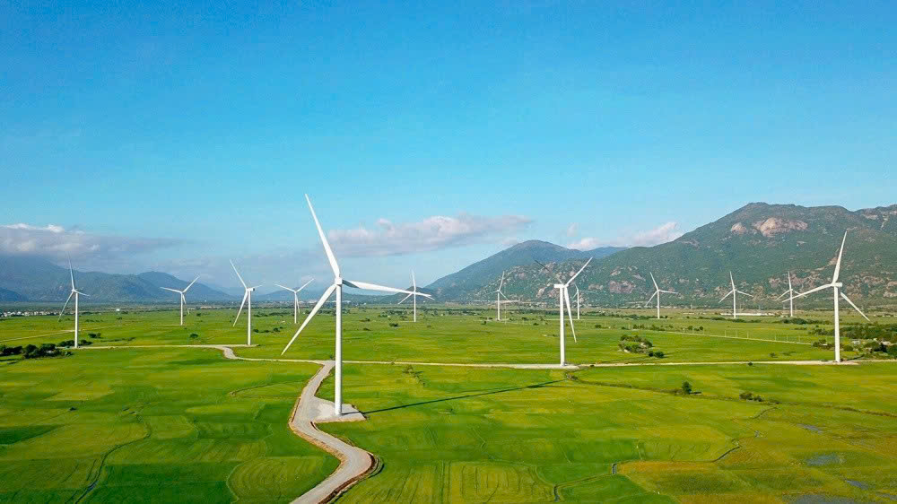
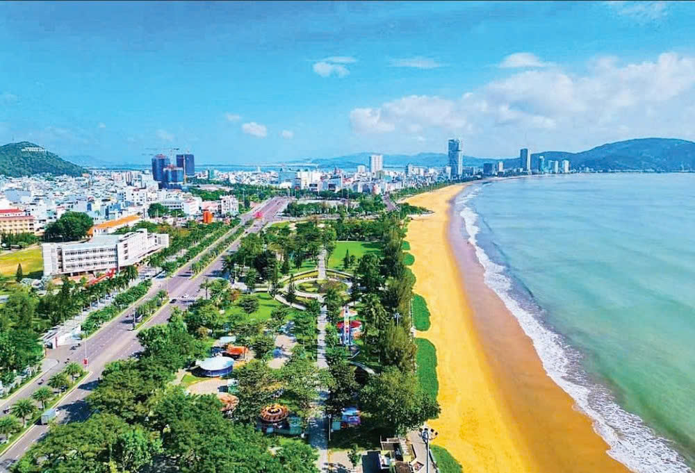

Định Hướng Phát Triển
Trong bối cảnh hội nhập và phát triển, Bình Định (Gia Lai Đông) đang vươn mình phát triển theo hướng kinh tế bền vững, tận dụng lợi thế địa phương để tạo nền tảng lâu dài. Vùng đất này hướng đến du lịch gắn với văn hóa, nơi cảnh sắc thiên nhiên hòa quyện cùng bản sắc truyền thống. Cùng với đó, giáo dục và phát triển nguồn nhân lực được chú trọng nhằm tạo động lực cho tương lai. Tất cả được đặt trong mục tiêu phát triển xã hội hài hòa với bảo vệ môi trường, để sự phát triển luôn gắn liền với chất lượng sống của người dân.
 💼 Phát triển kinh tế bền vững
Bình Định tập trung phát triển kinh tế theo hướng đa ngành, hiện đại và thân thiện với môi trường. Các lĩnh vực công nghiệp, dịch vụ và du lịch được xác định là động lực tăng trưởng chính, trong khi nông nghiệp tiếp tục được cơ cấu lại theo hướng ứng dụng công nghệ cao, nâng cao giá trị sản phẩm.
Tỉnh chú trọng thu hút đầu tư, mở rộng các khu công nghiệp, đồng thời hỗ trợ phát triển các ngành nghề truyền thống, tạo thêm việc làm và nâng cao thu nhập cho người dân.
🏖️ Phát triển du lịch gắn với văn hóa
Du lịch được định hướng trở thành ngành kinh tế mũi nhọn của Bình Định. Tỉnh tập trung khai thác các danh lam thắng cảnh, di tích lịch sử và giá trị văn hóa đặc sắc như võ cổ truyền, bài chòi, lễ hội dân gian.
Bên cạnh đó, việc phát triển du lịch đi đôi với bảo tồn cảnh quan thiên nhiên, giữ gìn môi trường sinh thái và phát huy bản sắc văn hóa địa phương.
🎓 Phát triển giáo dục và nguồn nhân lực
Giáo dục và đào tạo nguồn nhân lực chất lượng cao là một trong những ưu tiên hàng đầu. Bình Định đẩy mạnh đầu tư vào hệ thống giáo dục, chú trọng đào tạo nghề, nâng cao kỹ năng cho người lao động, đáp ứng yêu cầu phát triển trong thời kỳ mới.
Sự kết nối giữa giáo dục – khoa học – công nghệ được tăng cường nhằm thúc đẩy đổi mới sáng tạo và phát triển bền vững.
🌱 Phát triển xã hội và bảo vệ môi trường
Bình Định hướng tới xây dựng xã hội văn minh, hiện đại nhưng giàu bản sắc. Các chính sách an sinh xã hội, chăm lo đời sống nhân dân được quan tâm thực hiện, đồng thời chú trọng bảo vệ môi trường, ứng phó với biến đổi khí hậu và phát triển xanh.
🌟 Tầm nhìn tương lai
Với những định hướng đúng đắn và quyết tâm đổi mới, Bình Định đang từng bước vươn lên trở thành tỉnh phát triển năng động của khu vực miền Trung. Trong tương lai, Bình Định không chỉ là điểm đến hấp dẫn về du lịch, mà còn là nơi đáng sống, đáng học tập và làm việc.